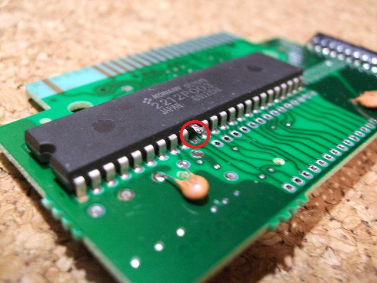
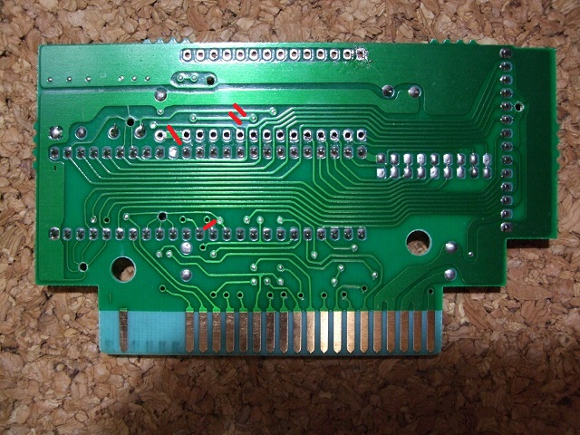
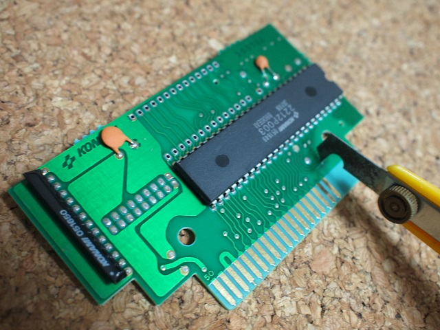

□各ＩＣ等のピン配置 SRAM(628512) 1Mbit ROM +--_--+ A18|1 32|VDD A16|2 31|A15 +--_--+ A14|3 30|A17 A15|1 28|VDD SRAMのA14にA15が来るのはOK、A17にVDDが来るのはカット A12|4 29|/WE A12|2 27|A14 SRAMの/WEにA14が来るのはカット A 7|5 28|A13 A 7|3 26|A13 A 6|6 27|A 8 A 6|4 25|A 8 A 5|7 26|A 9 A 5|5 24|A 9 A 4|8 25|A11 A 4|6 23|A11 A 3|9 24|/OE A 3|7 22|A16 SRAMの/OEにA16が来るのはカット A 2|10 23|A10 A 2|8 21|A10 A 1|11 22|/CS A 1|9 20|/CS 信号名はどちらも/CSですが、GALからの/CSとつなげるのでカット A 0|12 21|D 7 A 0|10 19|D 7 D 0|13 20|D 6 D 0|11 18|D 6 D 1|14 19|D 5 D 1|12 17|D 5 D 2|15 18|D 4 D 2|13 16|D 4 GND|16 17|D 3 GND|14 15|D 3 +-----+ +-----+
 次へ
次へ